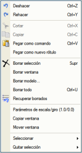
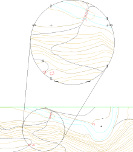

| |
|
DÜZENLE
|
Adından da anlaşılacağı gibi, Düzenle menüsünde bulunan araçlar, ekrandaki haritanın düzenlenmesine yöneliktir. Kullanıcılar tarafından iyi bilinen "Kopyala" ve "Yapıştır" gibi işlevler veya nesnelerin seçilerek silinmesi, Düzenle menüsü içinde bulunabilir. Bu yardımcı programların birçoğu, farenin sağ tuşuna basıldığında görüntülenen içerik menüsünde de bulunabilir. Geri Al ve Yinele
Kopyala, Kes ve Yapıştır Sil Silinenleri Geri Getir Pencereyi Kopyala/Taşı Ölçek ve Döndürme Parametreleri Geri Al ve Yinele ISTRAM®/ISPOL® gibi bir programla en yaygın görevlerden biri harita düzenlemedir. Bu görevi gerçekleştirirken çok kullanışlı olan iki araç, geri al  ve yinele ve yinele  butonlarıdır. butonlarıdır. İlk durumda, araç, yeni bir belge oluşturulması, yeni bir harita yüklenmesi veya bir koordinat dönüşümü yapılması haricinde, düzenleme sırasında yapılan tüm adımları geri almanızı sağlar; bu durumlarda geri al komutu yeni bir değişiklik yapılana kadar geçersiz kalır. Yinele işlevi, geri almanın tam tersi bir göreve sahiptir; eğer düzenlemenin bir kısmı daha önce geri alınmışsa, yapılan eylemler kadar ileri gider. Kopyala, Kes ve Yapıştır Kopyala  komutu ile herhangi bir ISTRAM®/ISPOL® harita nesnesi, orijinalini silmeden, daha sonra haritanın başka bir alanına kopyalanmak üzere saklanabilir. "Kopyalandıktan" sonra, nesnenin daha sonra "yapıştırılmasına" olanak tanıyan bir referans noktası sağlanacaktır. Klavye kısayolu olarak <Ctrl + C> de mevcuttur. komutu ile herhangi bir ISTRAM®/ISPOL® harita nesnesi, orijinalini silmeden, daha sonra haritanın başka bir alanına kopyalanmak üzere saklanabilir. "Kopyalandıktan" sonra, nesnenin daha sonra "yapıştırılmasına" olanak tanıyan bir referans noktası sağlanacaktır. Klavye kısayolu olarak <Ctrl + C> de mevcuttur.Öncekine benzer şekilde, kes  komutu da harita nesnelerini saklamaya olanak tanır, ancak bu sefer orijinalini korumadan. İlgili klavye kısayolu <Ctrl + X>'dir. komutu da harita nesnelerini saklamaya olanak tanır, ancak bu sefer orijinalini korumadan. İlgili klavye kısayolu <Ctrl + X>'dir.Üçünün sonuncusu olan yapıştır  , neyin yapıştırılmak istendiğine bağlı olarak farklı seçeneklere sahip olduğu için daha fazla ayrıntı gerektirir. Harita nesnelerini yapıştırma durumunda, "kopyalama" veya "kesme" ön adımı yapıldıktan sonra "yapıştırma" işlemi doğrudandır. Ancak, alfanümerik yazılar için ikinci bir seçenek vardır. Herhangi bir yazılı belgeden harita üzerine bir yazı almak isteniyorsa, Yeni yazı olarak yapıştır komutunu kullanmak ve fare imleci ile konumunu belirtmek yeterlidir. , neyin yapıştırılmak istendiğine bağlı olarak farklı seçeneklere sahip olduğu için daha fazla ayrıntı gerektirir. Harita nesnelerini yapıştırma durumunda, "kopyalama" veya "kesme" ön adımı yapıldıktan sonra "yapıştırma" işlemi doğrudandır. Ancak, alfanümerik yazılar için ikinci bir seçenek vardır. Herhangi bir yazılı belgeden harita üzerine bir yazı almak isteniyorsa, Yeni yazı olarak yapıştır komutunu kullanmak ve fare imleci ile konumunu belirtmek yeterlidir.Öte yandan, ISTRAM®/ISPOL®'ün kendi komut satırına bir komut olarak yapıştırmak isteniyorsa, komut olarak yapıştır seçeneği kullanılacaktır. "Kopyala" ve "kes" gibi, yapıştırmanın da <Ctrl + V> ile kendi klavye kısayolu vardır. Sil Düzenleme için başka bir araç da silme aracıdır. Düzenle menüsünde çeşitli silme seçenekleri bulunabilir, hepsi aşağıda açıklanmıştır:
Silinenleri Geri Getir Silinenleri geri getir  aracı, ISTRAM®/ISPOL®'de mevcut oturum sırasında silinen nesneleri, ekranda belirdiklerinde onları seçerek ve komut alanında görünecek olan [Tamam] butonuna basarak geri getirmeyi sağlar. aracı, ISTRAM®/ISPOL®'de mevcut oturum sırasında silinen nesneleri, ekranda belirdiklerinde onları seçerek ve komut alanında görünecek olan [Tamam] butonuna basarak geri getirmeyi sağlar.Pencereyi Kopyala/Taşı Pencereyi kopyala seçeneği, pencere yakalama yöntemiyle istenen tüm nesneleri seçerek, kopyalama için bir referans noktası da sağlayarak, daha sonra başka bir konuma kopyalanmasını sağlar. İkinci seçenek olan pencereyi taşı, öncekiyle aynı şekilde çalışır ancak orijinalini korumaz. Ölçek ve Döndürme Parametreleri Bu araç, daha önce açıklanan pencereyi kopyala ve taşı seçenekleri için ölçek ve döndürme parametrelerini değiştirmeyi sağlar. Varsayılan olarak, program bir ölçek faktörü ve sıfır döndürme ile çalışır. Bu seçeneğin kullanılabileceği faydalardan biri, haritanın belirli bir bölgesinin büyütülmüş detaylarını oluşturma imkanıdır. |